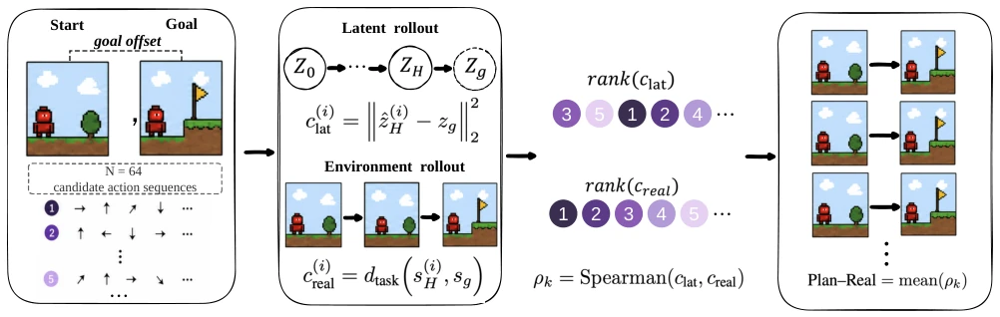
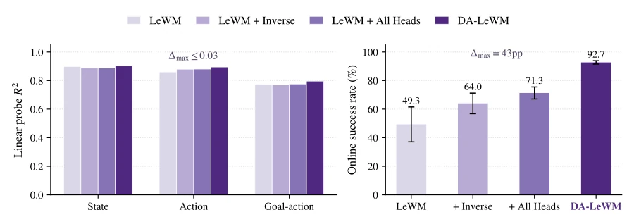
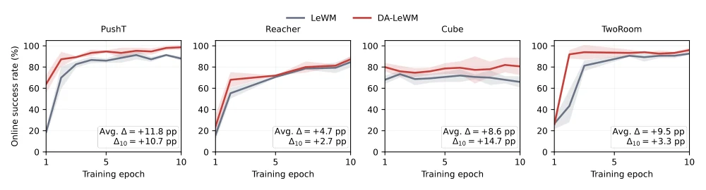
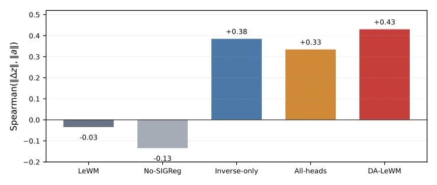

This paper pours cold water on JEPA researchers obsessed with "decoding capabilities": being able to decode task information does not imply that your latent space geometric structure can guide planning. The authors sharply point out that models like LeWM, although having pretty Linear Probes (Linear Probes) scores, often fail to correctly order action sequences with Euclidean distances in the latent space, leading to MPC planning that is "high in aspiration but low in execution". DA-LeWM, by adding two lightweight auxiliary heads, forcibly "straightened out" the geometric structure of the latent space, allowing the planner to finally understand the "human language" in the latent space. However, this approach essentially relies on "cheating" (adding auxiliary supervision) to patch geometric defects, rather than solving the metric problem of JEPA from first principles. Furthermore, all experiments were conducted in simulation environments, and only short-horizon tasks were tested; regarding whether it is effective for real robots or long-horizon planning, the authors honestly left a question mark. Overall, this is a pragmatic work of "diagnosis first, prescription later"; although the prescription is simple, the diagnosis is quite thorough.
研究动机Motivation
在基于JEPA风格的潜世界模型（如LeWM）中进行模型预测控制（MPC）时，通常直接使用潜空间到目标潜点的欧氏距离作为代价函数。然而，作者发现一个被忽视的关键问题：即使潜空间具备“信息充分性”（即能解码出状态、奖励等任务变量），其几何结构（Metric Structure）未必与真实环境的任务代价结构对齐。这意味着，潜空间里距离目标最近的候选动作序列，在真实环境中未必是表现最好的。现有工作（如Maes et al. 2026的LeWM）主要关注提升解码能力，却忽略了规划器实际依赖的几何排序性质。这种“信息充分但几何错位”的现象导致训练目标的小幅调整往往引发在线规划成功率的剧烈波动，而线性探针却几乎不变。因此，亟需一种机制来诊断并修复这种决策度量对齐（Decision-Metric Alignment）的缺失，否则再好的表征也无法转化为有效的控制。
When performing Model Predictive Control (MPC) in JEPA-style latent world models (such as LeWM), the Euclidean distance from the latent space to the target latent point is typically used directly as the cost function. However, the authors discovered a neglected key issue: even if the latent space possesses "information sufficiency" (i.e., can decode state, reward, and other task variables), its geometric structure (Metric Structure) may not align with the task cost structure of the real environment. This means that the candidate action sequence closest to the target in the latent space may not be the best performing one in the real environment. Existing work (such as LeWM by Maes et al. 2026) mainly focuses on improving decoding capabilities, but ignores the geometric ranking properties that planners actually rely on. This phenomenon of "information sufficiency but geometric misalignment" causes small adjustments in training objectives to often trigger drastic fluctuations in online planning success rates, while Linear Probes (Linear Probes) remain almost unchanged. Therefore, a mechanism is urgently needed to diagnose and repair this lack of Decision-Metric Alignment; otherwise, even the best representations cannot be converted into effective control.

Figure 2: Plan-Real Spearman measurement procedure. This operationalizes the candidate-order comparison in Figure 1. For each held-out pair k, the same N = 64 action sequences are evaluated by the world model and the environment, yielding paired latent- and real-cost vectors. Spearman gives a pair-level rank correlation ρk; Plan–Real averages the defined correlations among n = 30 sampled pairs. CEM-stage Spearman reuses the paired scoring procedure with candidates from the selected CEM population.
The paper proposes DA-LeWM (Decision-Aligned LeWM), whose core is introducing action-conditioned auxiliary supervision on the basis of LeWM to optimize the geometric structure of the latent space. The overall process is divided into two stages: training and planning; the training stage adds two lightweight auxiliary heads on top of the original prediction loss and SIGReg regularization; the planning stage still adopts standard CEM-MPC, using latent space Euclidean distance as the cost. The innovation lies in the design of the two auxiliary heads: 1) Inverse-dynamics head (Inverse-dynamics head): predicts actions given two consecutive latent states, forcing the latent state transition direction to contain action information, preventing latent space degradation or anisotropic stretching in action-related directions. 2) Goal-conditioned action head (Goal-conditioned action head): utilizes demonstration data to predict the action sequence required from the current latent state to the target latent state, making the geometric distance in the latent space correspond more closely to task progress. These two heads are used only for training and are discarded during inference. Additionally, the authors proposed two diagnostic metrics: Plan-Real Spearman (latent/real cost rank correlation of random candidate sequences) and CEM-stage Spearman (rank correlation at different stages of CEM search), used to quantify the alignment degree. Theoretical analysis indicates that Encoder Distortion (Encoder Distortion), Terminal rollout Error (Terminal Rollout Error), and Candidate Margins (Candidate Margins) are key factors determining rank preservation, and the auxiliary heads are precisely to alleviate these problems.

Figure 3: Probe accuracy vs. online success on PushT (3 evaluation seeds). Probe scores are nearly identical across the four non-collapsed variants, while online success differs sharply.
Experiments were conducted in four simulation environments: PushT, Reacher, Cube, and TwoRoom. Baselines include LeWM, No-SIGReg (No-SIGReg), Inverse-only (Inverse-only), and All-heads (All-heads). Evaluation metrics cover Linear Probe accuracy, Plan-Real Spearman, CEM-stage Spearman, and Online Success Rate. Results show that although the Linear Probe scores of all non-collapsed variants are almost consistent, DA-LeWM's Plan-Real Spearman is significantly higher than LeWM (e.g., from 0.280 to 0.412 on PushT), and Online Success Rate is greatly improved (from 49.3% to 92.7% on PushT). Ablation studies show that the Inverse-dynamics head contributes most to improving rank correlation, while the Goal-conditioned action head further improves Online Success Rate. CEM-stage analysis found that auxiliary heads significantly improved global ranking in random and intermediate stages, but all models showed saturation in the elite stage. Compared with SOTA methods such as PLDM and DINO-WM, DA-LeWM achieved optimal or near-optimal performance on most tasks, proving that action-conditioned supervision can effectively accelerate convergence and improve control performance.

Figure 4: Online success throughout ten training epochs (3 evaluation seeds per task, mean ± std). Shading shows one standard deviation. Annotations report DA-LeWM minus LeWM averaged over epochs (Avg. ∆) and at epoch 10 (∆10).

Figure 5: Global Spearman correlation between ∥∆z∥and ∥a∥on 38,400 held-out PushT transitions. Values are read directly from the saved diagnostic output. No synthetic points are shown.